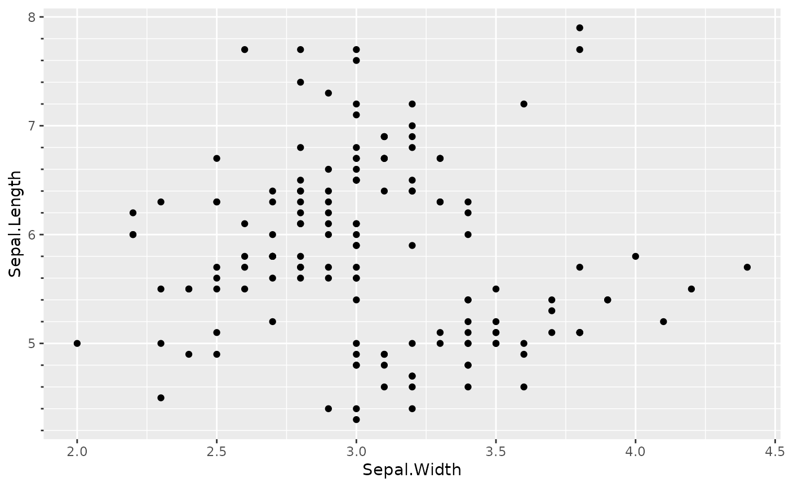

![[Deprecated]](figures/lifecycle-deprecated.svg) These are similar the the normal axis guides for position scales, but also
place tickmarks at minor break positions.
The function is deprecated because it can be replaced with
These are similar the the normal axis guides for position scales, but also
place tickmarks at minor break positions.
The function is deprecated because it can be replaced with
ggplot2::guide_axis(minor.ticks = TRUE).
Arguments
- title
A character string or expression indicating a title of guide. If
NULL, the title is not shown. By default (waiver()), the name of the scale object or the name specified inlabs()is used for the title.- check.overlap
silently remove overlapping labels, (recursively) prioritizing the first, last, and middle labels.
- angle
Compared to setting the angle in
theme()/element_text(), this also uses some heuristics to automatically pick thehjustandvjustthat you probably want. Can be one of the following:NULLto take the angles andhjust/vjustdirectly from the theme.waiver()to allow reasonable defaults in special cases.A number representing the text angle in degrees.
- n.dodge
The number of rows (for vertical axes) or columns (for horizontal axes) that should be used to render the labels. This is useful for displaying labels that would otherwise overlap.
- order
A positive
integerof length 1 that specifies the order of this guide among multiple guides. This controls in which order guides are merged if there are multiple guides for the same position. If 0 (default), the order is determined by a secret algorithm.- colour, color
A
character(1)with a valid colour for colouring the axis text, axis ticks and axis line. Overrules the colour assigned by the theme.- trunc_lower, trunc_upper
The lower and upper range of the truncated axis:
NULLto not perform any truncation.A
functionthat takes the break positions as input and returns the lower or upper boundary. Note that also for discrete scales, positions are the mapped positions asnumeric.A
numericvalue in data units for the lower and upper boundaries.A
unitobject.
- position
Where this guide should be drawn: one of top, bottom, left, or right.
Theme elements
This axis guide uses the following the theme elements:
ggh4x.axis.ticks.length.minorAn
rel()object to set the size of minor ticks relative to the length of major ticks (axis.ticks.length). Defaults torel(2/3).
See also
Other axis-guides:
guide_axis_logticks(),
guide_axis_manual(),
guide_axis_nested(),
guide_axis_scalebar(),
guide_axis_truncated()
Examples
# Using the minor breaks axis
p <- ggplot(iris, aes(Sepal.Width, Sepal.Length)) +
geom_point()
p + scale_y_continuous(guide = "axis_minor")
#> Warning: `guide_axis_minor()` was deprecated in ggh4x 0.3.0.
#> ℹ Please use `ggplot2::guide_axis(minor.ticks = TRUE)` instead.
#> ℹ The deprecated feature was likely used in the ggplot2 package.
#> Please report the issue at <https://github.com/tidyverse/ggplot2/issues>.
# Minor break positions are still controlled by the scale
p + scale_y_continuous(guide = "axis_minor",
minor_breaks = seq(4, 8, by = 0.2))

# Minor tick length is controlled relative to major ticks
p + scale_y_continuous(guide = "axis_minor") +
theme(ggh4x.axis.ticks.length.minor = rel(0.1))